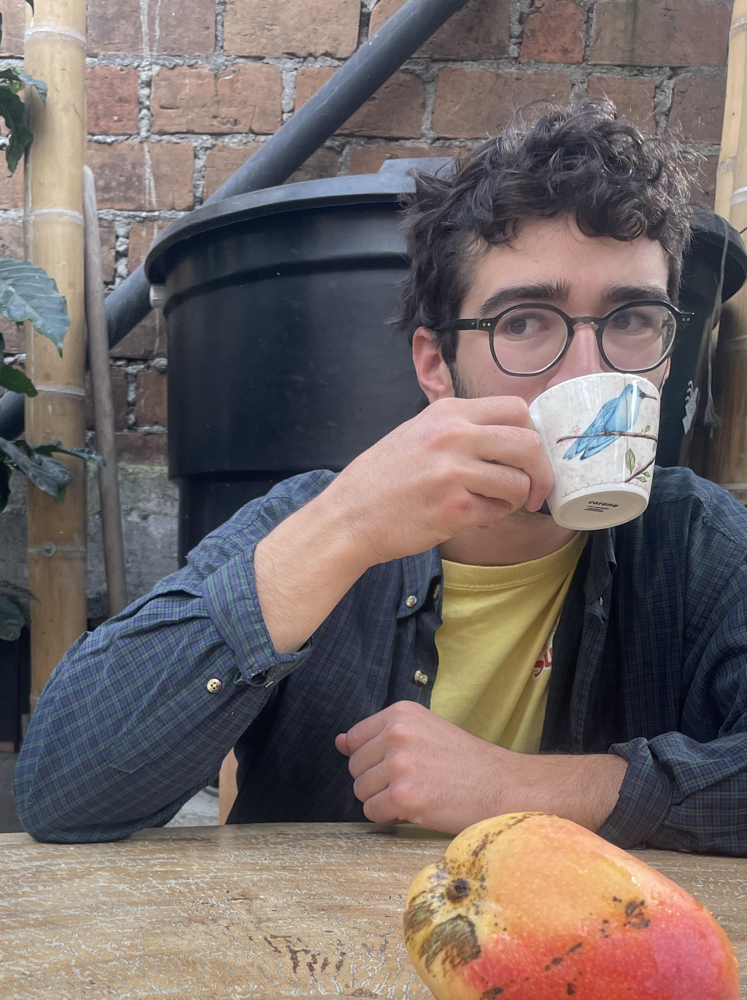

Noah Geffroyd (il/lui) est un écrivain, journaliste et cinéaste de Montréal. Son écriture a déjà été publiée en ligne dans les journaux Crab Apple Literary et Sounds and Colours. Il adore faire à bouffer pour ses potes et échanger des anecdotes. On peut trouver ses autres projets sur son site web noahgeff.hotglue.me.

Marcel Goh (il/lui) poursuit actuellement son doctorat en mathématique à l’Université McGill. Il est né à Singapour et a grandi sous l’immense ciel des prairies à Leduc, Alberta. Sa fiction est apparue dans les journaux Existere, The Prairie Journal, et Ricepaper Magazine. On peut le trouver en ligne à marcelgoh.ca.
Jonah Saks (il/lui) est un écrivain de Montréal. On peut trouver sa poésie dans les journaux Crab Apple Literary et Rainbug Poetry Review. Il adore composer de la musique originale, et encore plus l’interpréter. Les maths c’est sympa aussi. On peut le trouver en ligne à jonahsaks.github.io.